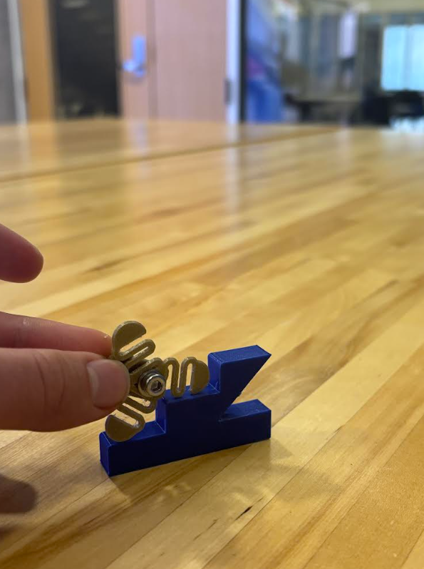
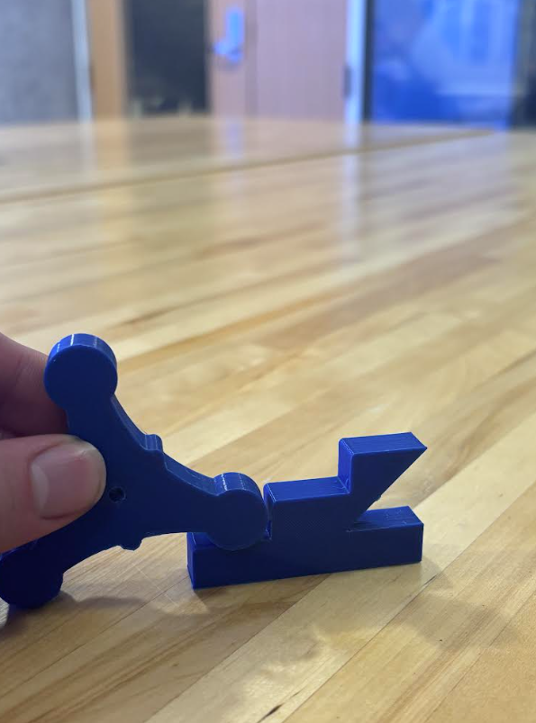
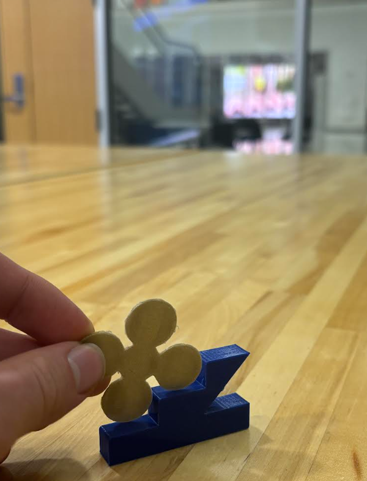

Other iterations & tests
Tested various wheel designs on standard stair CAD.




Documenting how the stair-climbing wheel evolved from concept to spring-assisted, medtech-friendly hardware.
Because this device interfaces with patients and stairs, we explored multiple wheel configurations, spring placements, and mounting approaches. Below is a visual record of our main iterations — from initial tri-wheel inspiration to our smoother spring-assisted version.
Early CAD attempts, step-clearance tests, and spring positioning trials.
Exploring stability, smoothness, and manufacturability.
Pros: simpler, smaller, closer to warehouse dolly, easier to mount on walker leg.
Cons: noticeable “step” during rotation → more vibration felt by user.
Pros: more contact points → smoother stair engagement, less per-step height.
Cons: larger diameter, more parts, potentially harder to print/assemble.
For our patient's we decided to prioritize comfort and safety over cost. While more expensive to produce than the tri-wheel system the 5-wheel cluster was significantly smoother.
Tested various wheel designs on standard stair CAD.